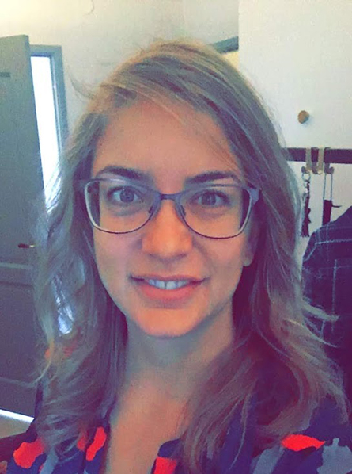

Att få möta nya utmaningar, skaffa mera erfarenhet, brinna, tycka, känna och lära mig mer än jag kan idag för att bli bättre imorgon är något som jag är redo för. En av mina stora passioner är att få jobba med förändring och ett kreativt tänkande. Ledarskap, ansvar, hälsa och miljö är viktiga ledord som funnits nära under mitt yrkesverksamma år och erfarenheter jag anammat.
Egenskaper... Jag har en god förmåga att jobba självständigt men föredrar att få jobba i team eller bolla fram idéer. Min kreativa sida är djup och om jag får tänka fritt kan jag lösa många olika problem snabbt. Långsiktiga mål är dem riktiga målen och jag strävar alltid efter att hitta nya och mer effektiva sättet att nå dem. Hade du frågat min familj, vänner och mig själv är jag en kanske mindre strukturerad person med ordning, väldigt stresstålig, stort hjärta, flexibel och social. Att koordinera, samordna, planera, tillämpa och att göra flera saker samtidigt är något jag trivs väldigt bra med och det engagerar mig till att förändra och förbättra både mig själv och människor kring mig. Jag har tålamod, lyhörd och är väldigt tydlig. Att ta ansvar, vara medveten om sina rättigheter samt arbetsmiljö är något som jag brinner för både de hårda och de mjuka värdena. Att få gå in i en roll där jag ska försvara min medlem mot mina kollegor i ledande positioner har inte alltid varit lätt. Sanningen är att det har varit den allra största men mest lärorika utmaningen i mitt liv i min fackliga roll. Än idag lär mig och är duktig på det jag gör för dem som behöver hjälpen, vägledningen eller stödet.
Tillgänglig i Stockholm och digitalt i hela världen
anna_tonelli@hotmail.com
+46 762 496 127